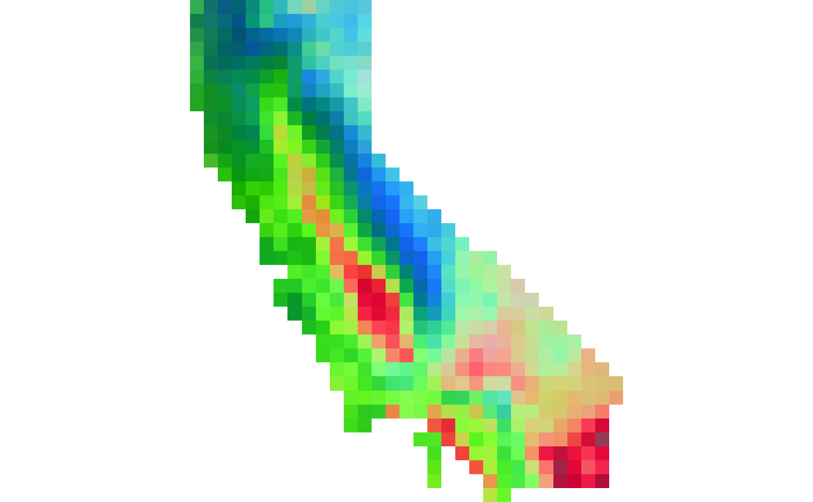

Map phylospatial data onto RGB color bands
ps_rgb.RdPerform an ordination that reduces a spatial phylogenetic data set into three dimensions that can be
plotted as the RGB bands of color space to visualize spatial patterns of community phylogenetic composition.
This function is a wrapper around ps_ordinate().
Usage
ps_rgb(ps, method = c("nmds", "cmds", "pca"), trans = identity, spatial = TRUE)Arguments
- ps
A
phylospatialobject with a non-nulldissimcomponent, generated by ps_add_dissim.- method
Ordination method, either "pca" (principal component analysis implemented via
stats::prcomp()), "cmds" (classical MDS, implemented viastats::cmdscale()), or "nmds" (the default, nonmetric MDS, implemented viavegan::metaMDS(); this is slower but often preferred).- trans
A function giving a transformation to apply to each dimension of the ordinated data. The default is the identity function. Specifying
rankgenerates a more uniform color distribution.- spatial
Logical indicating whether a spatial object (inherited from
ps) should be returned. Default is TRUE.
Examples
ps <- ps_add_dissim(moss())
RGB <- ps_rgb(ps, method = "cmds")
terra::plotRGB(RGB * 255, smooth = FALSE)
